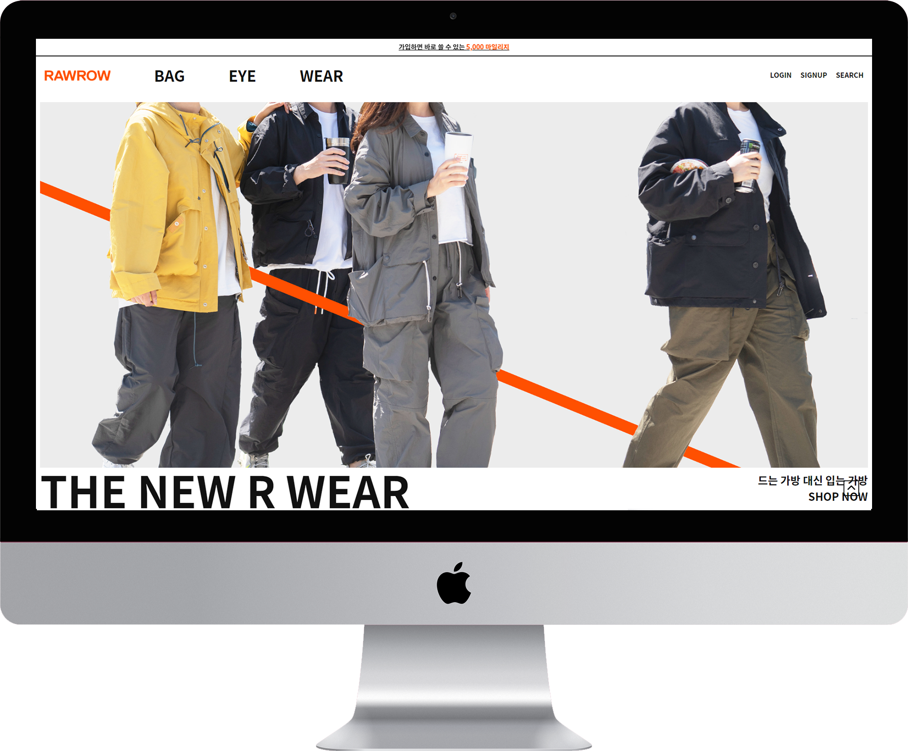
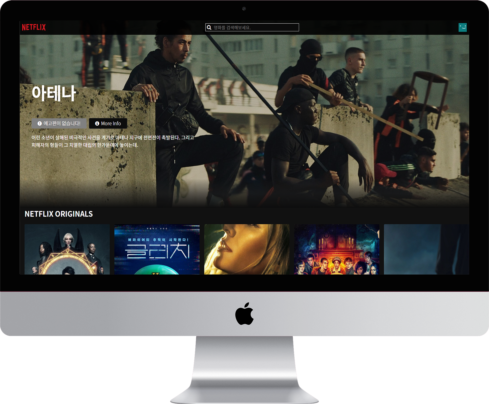
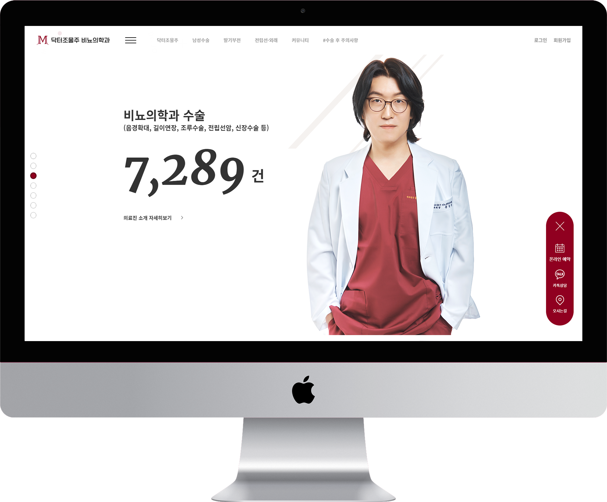
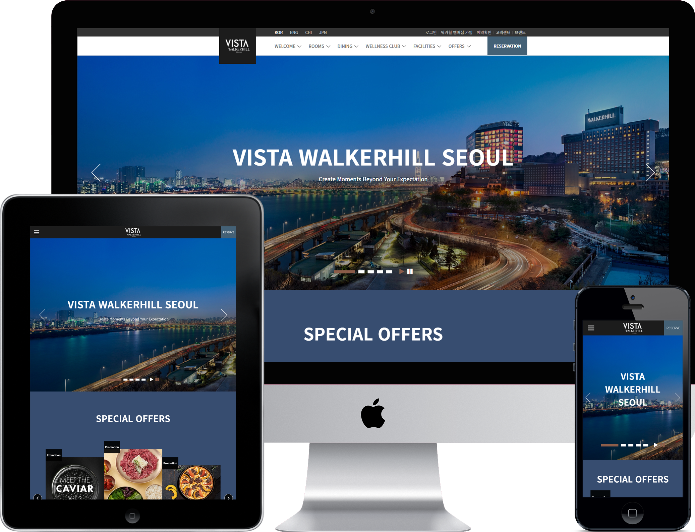

서진웅 프로필
-
경력
2021-03~2022-05아이보스 - 웹퍼블리셔로 근무
아이보스는 온라인마케팅을 중심으로 한 서비스를 제공하는 회사입니다.
다양한 웹사이트를 유지, 보수 및 제작을 하며 화면개발에 대한 감을 충분하게 익혔습니다.
2020-06~2022-12티엔에이치 - 웹퍼블리셔로 근무
티엔에이치는 EMR 프로그램을 전문으로 개발하는 솔루션 업체입니다.
차트프로그램 유지, 보수 및 신규 프로그램 개발에서 프론트엔드 부분을 담당한 이력이 있습니다. -
교육
2019-10~2020-04KH정보교육원 종로지원 - (NCS) 반응형 스마트웹&콘텐츠 개발자 양성과정 수료
JAVA 언어를 기반으로 백엔드 프로그래밍에 대한 교육을 받았습니다.
JDBC, SQL, Spring Framework, MyBatis 등의 기술을 다룰 수 있게 되었으며 프로그래밍에 대한 이해를 더 넓히는 계기가 되었습니다.
2018-02~2018-07강남 그린컴퓨터아카데미 - 웹디자인/웹퍼블리셔(반응형 웹디자인) 양성과정 - 디지털디자인 과정 수료
약 5개월의 기간동안 웹디자인/웹퍼블리싱에 대한 교육을 이수했습니다.
코딩에 처음 입문하게 된 순간이었고 HTML, CSS, JavaScript에 대한 기초적인 지식을 얻는 계기가 되었습니다. -
기술 태그
HTML, SCSS(CSS), javascript, react.js, redux, git(github)
-
학력
2012-03~2018-02서경대학교 국어국문학과 학사졸업
2009-03~2012-02대광고등학교 졸업
-
연락처
tjwlsdnd12@naver.com
010-2705-7964
https://github.com/seojinwoong - 자격증 정보처리기사
- 생년월일 1993-12-24
- 거주지 서울시 동대문구
PORTFOLIO
-

-

-

닥터조물주 비뇨의학과
- Viewport
- 반응형
- 기술스택
- html5, CSS3, jQuery, PHP
- 참여도
- 화면개발 100%
아이보스라는 회사에 근무할 당시, PHP개발자와 제작한 프로젝트입니다. 동적인 인터랙션을 요소 곳곳에 넣는 것을 중점으로 퍼블리싱 하였습니다.
-

비스타 워커힐
- Viewport
- 반응형
- 크로스 브라우징
- Chrome, Firefox, IE9+
- 페이지 구성
- 메인, 고객의 소리, 공지사항
- 참여도
- 100%
비스타 워커힐 서울 홈페이지를 연습삼아 그대로 따라해본 포트폴리오입니다. 디자인만 보고 최대한 비슷하게 구현해 보았습니다. 윈도우 창을 줄였을 때 그 크기에 맞게 슬라이드 되는 px의 수치가 바뀌는 resize 이벤트를 사용하는 등 반응형에 맞게 스크립트를 짜보았습니다.